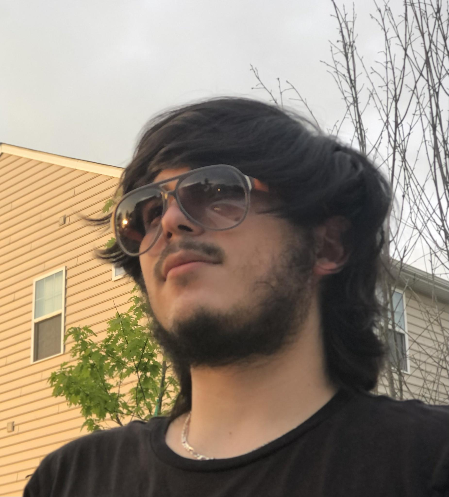

Hi, my name is Jonathan Olivencia and welcome to my portfolio! I'm currently studying at General Assembly in order to become an accomplished and astute software engineer. My hope is to be molded into a developer that can be considered a valuable asset wherever I end up. Here are some pictures of me, one looking especially cool with sunglasses and an untrimmed beard. There's also some of my dog, Athena, who is better than your dog.

About
I can't really pin down when I wanted to pursue this career, but I know that I grew up having a massive interest in video games. Having been exposed to early Nintendo systems and computer games at an early age, I can confidently say that this is where my interest in programming is rooted from. In middle school, I took a class focusing on how to change the elements of a webpage, and I loved it. I was fascinated by how each command was a vital cog in the machine that was the webpage. Fast-forward to college, still not knowing what career I wanted to pursue, software engineering and web development were always nagging me in the back of my mind. But I had been told by others that this wasn't a reliable/proper career, sitting at a desk and coding all day. This kept me from taking the leap for so long, until I took a chance on an intro course to computer science in my last semester of college. This is where my world was flipped: I loved every bit of this course. Yes, the beginning was so hard to understand, being told to "print" the string "Hello World!" (we used Java) "What? What is print? A string on a computer? Why am I saying 'Hello World!'?" But my professor was patient and explained everything, and when everything clicked for me, I couldn't get enough. Every assignment felt like a puzzle that needed to be solved, and I got to figure out my own way of solving it. Even the challenging assignments excited me, pushing me to look for my own solution and overcoming the obstacles in a way that I understood. I learned ways of making my code cleaner and more concise, and how to make different programs work together to complete an objective. This is what I wanted to do, but I didn't want to go through another 2-4 years of school to do it; I'd waited long enough. Through extensive searching and asking developer-friends, I was led to General Assembly, where I got my start in the career I truly enjoyed.